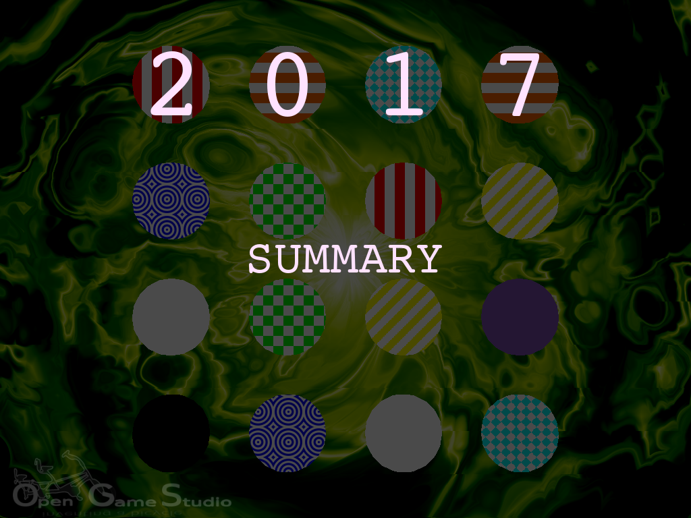

2017-11-22 00:00

It's time to step back to see our accomplishments in 2017 and how they connect to the overall goal of Opensource Game Studio project.
Brief history
Opensource Game Studio project is 12 years old now.
2005. We started the project with a fanatic call to create the best game ever. Probably right after finishing Half-Life 2 or Morrowind. 99.99% of those who wanted to participate weathered during a couple of years leaving only the two of us: Michael (coding) and Ivan (the rest). The project was in a constant turmoil because we had no clear purpose and discipline. Thus, we only got a handful of demonstrations during that period.
2010. The first year for us to admit we failed big time. After accepting the failure, we have set Mahjong game as our initial target. We also realized that if we want the game out, we must work every day. We didn't get anywhere by working on weekends because they often collided with family time.
2012, 2013. We released Mahjong 1.0 and Mahjong 1.1 correspondingly. We created a complete, polished game in 3-4 years after failing to provide anything of value during previous 5 years. To this date, Mahjong is the best and only game we released so far. We're still proud of it because it still feels great.
2015. We showcased the first version of our game toolset. After releasing Mahjong, we decided to spend time on building toolset that would allow us to develop games faster.
2016. We recreated Mahjong gameplay with our game toolset. However, we quickly realized that desktop only game toolset is a dead end. It led us to research mobile platforms.
Last year
2016, October. We started mobile platforms' research by making simple straightforward OpenSceneGraph application run under Android.
2017, January. We got the Android version working and started iOS and Web research.
2017, February. We made the sample application work everywhere: desktop, mobile, web.
Researching mobile and web took us about five months. We spent that much time because there was no documentation on how to run OpenSceneGraph across platforms. We had to step in and create said documentation.
2017, July. We published OpenSceneGraph cross-platform guide, which describes how to create a simple OpenSceneGraph application and make it run on desktop, mobile, and web. To this date, this is our most popular GitHub repository.
2017, November. We published simple Memory: Colors game and the guide on how to create the game from scratch. The game is powered by MJIN, our new cross-platform game toolset that we started this summer.
Currently MJIN toolset is in its infancy. MJIN needs a real game to flourish. That's why we are already working on cross-platform Mahjong. We'll do our best to make Mahjong faster this time.